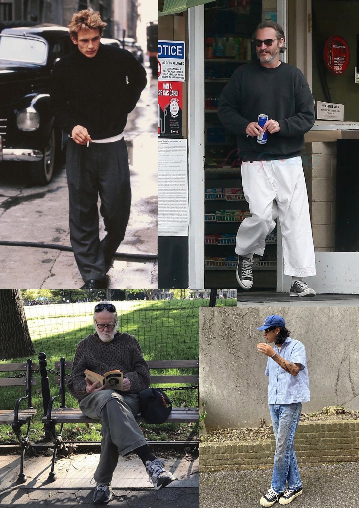

Vintage clothing is a generic term for garments originating from a previous era. The phrase is also used in connection with a retail outlet, e.g. in vintage clothing store. Today vintage dressing encompasses choosing accessories, mixing vintage garments with new, as well as creating an ensemble of various styles and periods.[1] Vintage clothes typically sell at low prices for high end named brands. It has been part of the world since World War I as an idea of reusing clothing because of the textile shortage.
